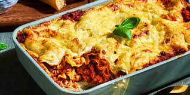

Lasagna

Description
Lasagne is a traditional Italian dish made with a combination of meat, cheese, and vegetables.
It is often served as a main course, but can also be used as a side dish.
It requires a lot of time to make, but it is a very tasty dish.
It is very important to use fresh ingredients.
Ingredients
- 1 Kg lasagna noodles
- 1 l Bolognese sauce
- 200 g Parmesan cheese
- 100g flour
- 100g butter
- 100g milk
- 500g ground beef
- 500g ground pork
Directions
- Cook meat and add to the sauce
- Prepare bechamel sauce. Melt the butter and add the flour and the milk
- Place layers of the mixed sauce and the noodles in a large bowl. The bottom and top layers should be sauce.
- Add the cheese on the top.
- Bake in preheated 300 degree oven for 20 minutes.